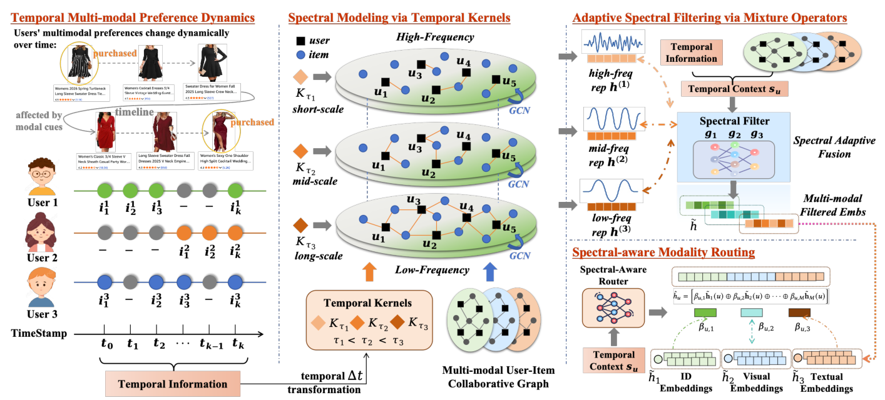
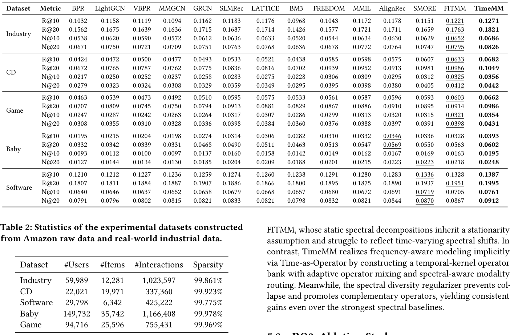
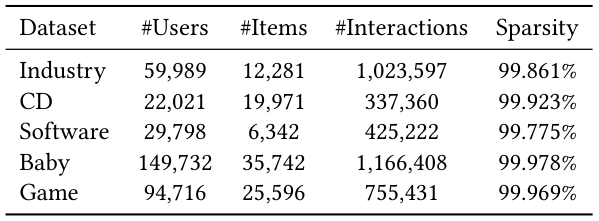
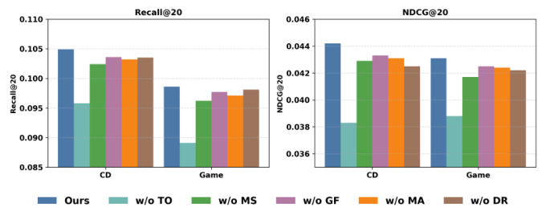
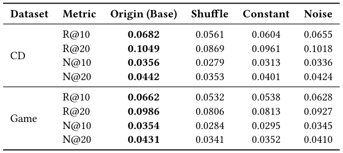
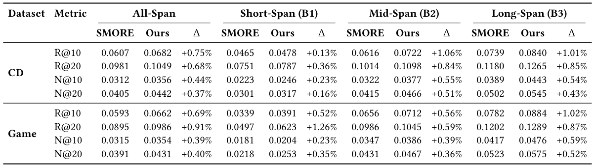

TimeMM: Time-as-Operator Spectral Filtering for Dynamic Multimodal Recommendation (时间即算子：面向动态多模态推荐的谱滤波框架)
- 会议/期刊: SIGIR 2026 (第 49 届国际 ACM SIGIR 会议，Melbourne, VIC, Australia)
- 推荐链路定位: 召回 (Retrieval) — 基于用户–物品二部图的多模态图召回表征学习
- 研究方向: 多模态推荐 (Multimodal Recommendation) / 图神经网络推荐 (Graph Rec)
- 论文原文: https://arxiv.org/abs/2604.26247v1
- 开源代码: https://github.com/llm-ml/TimeMM
TL;DR (核心速览)
针对多模态推荐中静态交互图无法刻画用户兴趣非平稳演化、且显式谱分解计算昂贵的问题，TimeMM 提出 Time-as-Operator：将交互时间衰减映射为参数化时间核，重加权二部图边权，构造共享稀疏拓扑的轻量谱滤波器组；再以时间上下文门控混合算子（自适应谱滤波）、按谱状态路由视觉/文本模态，并用排序空间谱多样性正则防止专家坍缩。在 4 个 Amazon 域 + 1 个工业离线数据集上，全库排序协议下 Recall@20/NDCG@20 全面超越 SOTA 多模态推荐器，且保持线性时间复杂度。
Background & Motivation (背景与动机)
- 领域背景与主流范式: 多模态推荐通过融合物品视觉/文本内容与协同信号缓解交互稀疏。当前主流范式（MMGCN、DualGNN、LATTICE、FREEDOM、MMGCL、SLMRec、AlignRec、MMIL、PromptMM 等）将用户–物品交互建模为静态二部图，在图上做拓扑感知消息传递，并以对比学习/对齐目标降低模态噪声。
- 现有方法局限 (Limitations of Prior Work):
- 时间不可知 (Temporal Agnosticism)：历史交互被无差别聚合，多年前的交互与昨天的交互等权，难以区分过时兴趣与新兴意图，导致概念漂移 (concept drift) 下模型偏向全局历史信号，与用户潜在视觉驱动的短期意图错配。
- 显式谱方法在动态场景失效：FITMM、SMORE 等通过谱变换/特征分解将表征分解为正交频带，但依赖静态图快照的全局分解，得到固定谱基与固定滤波行为，无法适应时变谱漂移；且矩阵分解带来显著计算开销，难以扩展。
- 模态统一滤波：现有方法对视觉与文本施加相同滤波，忽视视觉信号对短程波动更敏感、文本语义演化更平稳的模态差异。
- 核心挑战 (Key Challenge): 用户决策是长期习惯与短期冲动的叠加，有效时间尺度因人、因时而异；且时间敏感性是模态相关的。简单地把时间作为辅助特征拼接、或加深网络层数，都无法让图传播算子本身随预测时刻自适应地改变平滑强度（即改变频率响应）。
- 核心洞察与切入点 (Key Insight): 作者借助时–频对偶视角：不同时间尺度对应不同平滑强度、进而对应不同频率侧重（短程核强调高频瞬态信号，长程核保留低频稳定偏好）。因此无需昂贵的显式特征分解，只需将交互新近度映射为参数化时间核来重加权边，即可隐式诱导一个轻量谱滤波器组——这正是 "Time-as-Operator" 的核心思想。
Problem Formulation & Method (问题定义与方法架构)
1. 符号定义与输入表征 (Notations & Input Representations)
- 用户集 \(\mathcal{U}=\{u\}_{u=1}^{U}\)，物品集 \(\mathcal{I}=\{i\}_{i=1}^{I}\)，节点集 \(\mathcal{V}=\mathcal{U}\cup\mathcal{I}\)，\(|\mathcal{V}|=N=U+I\)。
- 训练数据为带时间戳交互三元组集合 \(\mathcal{E}=\{(u,i,t)\mid u\in\mathcal{U}, i\in\mathcal{I}, t\in\mathbb{R}^{+}\}\)，在其上构建用户–物品二部图。
- 模态集 \(\mathcal{M}\)，每个物品 \(i\) 关联 \(M\) 个模态特征。原始特征矩阵 \(\mathbf{F}^{m}\in\mathbb{R}^{I\times d_m}\)，经模态专属编码器投影到共享 \(D\) 维空间，得到初始节点嵌入 \(\mathbf{X}^{(0)}_m\in\mathbb{R}^{N\times D}\)。用户侧 \(\mathbf{X}^{(0)}_m\) 为可学习嵌入，物品侧由编码后的多模态特征初始化。
- 输出：用户最终表征 \(\hat{\mathbf{h}}_u\) 与物品表征 \(\tilde{\mathbf{h}}_i\)，以内积 \(\hat{y}_{ui}=\langle\hat{\mathbf{h}}_u,\tilde{\mathbf{h}}_i\rangle\) 打分。
2. 整体流水线 (Overall Architecture)
数据流：时间戳 \(\to\) 时间邻近核重加权边 \(\to\) \(K\) 个尺度共享稀疏拓扑的加权邻接算子 \(\to\) 各尺度并行 LightGCN 式传播 \(\to\) 时间上下文门控混合（自适应谱滤波）\(\to\) 谱感知模态路由 \(\to\) 内积打分 + 谱多样性正则。
flowchart TD
A["输入层: 带时间戳交互 (u,i,t) + 物品多模态特征 F^m"] --> B["Time-as-Operator: 时间邻近核 K_τ(Δt) 重加权边, 构造 K 个尺度算子 A^(k)"]
B --> C["并行多尺度传播: 各尺度 LightGCN 式加权图卷积, 得 h_m^(k)"]
C --> D["自适应谱滤波: 时间上下文 s_u / s_i 门控混合 K 个尺度专家"]
D --> E["谱感知模态路由: 按时间上下文重平衡视觉/文本通道并拼接"]
E --> F["内积打分 + BCE 损失 + 排序空间谱多样性正则"]图 1 展示了 TimeMM 的整体架构：Time-as-Operator 将交互新近度映射为时间核加权图算子族，形成轻量谱滤波器组；随后按时间上下文混合尺度输出，并进行谱感知模态路由，最后以谱多样性正则鼓励专家互补。
3. 核心模块设计与数学原理 (Key Designs & Formulations)
(1) Time-as-Operator：时间核作为谱滤波器组
对每条边定义用户专属时间锚 \(t_{\text{anchor}}(u)=\max\{t\mid(u,\cdot,t)\in\mathcal{E}\}\)，交互新近度为 $\(\Delta t_{ui}=\max\big(0,\ t_{\text{anchor}}(u)-t_{ui}\big).\)$ 基于人类记忆与重复消费的重尾衰减先验，引入参数化时间邻近核（尺度 \(\tau\)）： $\(w^{(\tau)}_{ui}=\mathcal{K}_\tau(\Delta t_{ui})=\exp\!\Big(-\frac{\log(1+\Delta t_{ui})}{\tau}\Big).\)$ 对尺度集合 \(\mathcal{T}=\{\tau_1,\dots,\tau_K\}\)，每个 \(\tau_k\) 构造加权邻接 \(\mathbf{A}^{(k)}\)（仅在观测边上赋权，其余为 0）。关键物理直觉：\(\tau\) 小 \(\Rightarrow\) 衰减快、强调近期交互、平滑弱（高频响应强）；\(\tau\) 大 \(\Rightarrow\) 保留长历史、平滑强（低频结构强）。由于所有尺度共享同一稀疏模式，只需维护 \(K\) 组边权，避免特征分解/SVD，这是相对 FITMM/SMORE 的核心效率优势。
各尺度并行传播（加权图上的 LightGCN 规则）： $\(\mathbf{X}^{(k,l+1)}_m=\big(\mathbf{D}^{(k)}\big)^{-1/2}\mathbf{A}^{(k)}\big(\mathbf{D}^{(k)}\big)^{-1/2}\mathbf{X}^{(k,l)}_m,\)$ 其中 \(\mathbf{D}^{(k)}_{nn}=\sum_j \mathbf{A}^{(k)}_{nj}\)。初始嵌入 \(\mathbf{X}^{(0)}_m\) 跨尺度共享（参数共享），尺度仅调制扩散行为。\(L\) 层后层聚合得 \(\mathbf{h}^{(k)}_m(n)=\sum_{l=0}^{L}\mathbf{X}^{(k,l)}_m(n)\)，为每个模态产出 \(K\) 个多尺度表征。
(2) 自适应谱滤波：算子混合
为每个用户/物品构造紧凑时间状态 \(\mathbf{s}_u,\mathbf{s}_i\in\mathbb{R}^{d_s}\)（仅用训练交互统计）：用户侧含对数均值交互年龄、对数中位交互年龄、对数活跃跨度、近期窗口交互占比；物品侧含相对全局参考时间的物品年龄、活跃跨度、交互数、相邻交互平均时间间隔，并标准化。门控网络给出尺度分配： $\(\mathbf{g}_u=\text{Softmax}\Big(\frac{\mathbf{W}_g\,\text{MLP}(\mathbf{s}_u)+\mathbf{b}_g}{T}\Big)\in\mathbb{R}^{K},\)$ 温度 \(T\) 控制混合锐度（小 \(T\) 更选择性，大 \(T\) 更平滑）。融合： $\(\tilde{\mathbf{h}}_m(u)=\sum_{k=1}^{K}g_{u,k}\,\mathbf{h}^{(k)}_m(u),\quad \tilde{\mathbf{h}}_m(i)=\sum_{k=1}^{K}g_{i,k}\,\mathbf{h}^{(k)}_m(i).\)$ 用户与物品两侧各自适配谱剖面，得到预测特定的有效谱响应。
(3) 谱感知模态路由
由共享时间上下文 \(\mathbf{s}_u\) 经轻量编码器得模态分数： $\(\mathbf{z}_u=\text{MLP}_{\text{mod}}(\mathbf{s}_u),\quad \boldsymbol{\beta}_u=\text{Softmax}(\mathbf{z}_u)\in\mathbb{R}^{M},\ \textstyle\sum_m\beta_{u,m}=1.\)$ 最终用户表征按通道缩放后拼接： $\(\hat{\mathbf{h}}_u=\big[\beta_{u,1}\tilde{\mathbf{h}}_1(u)\oplus\beta_{u,2}\tilde{\mathbf{h}}_2(u)\oplus\cdots\oplus\beta_{u,M}\tilde{\mathbf{h}}_M(u)\big].\)$ 该设计不做表征级跨模态对齐，而是上下文条件路由：短程谱状态下可强调捕捉快速变化的模态，长程状态下优先稳定慢变偏好线索，避免手工指定模态–尺度关联的脆弱性。
(4) 排序空间谱多样性正则
对三元组 \((u,i^+,i^-)\)，各谱分量 \(k\) 的偏好间隔为 $\(\delta^{(k)}(u,i^+,i^-)=\langle\hat{\mathbf{h}}^{(k)}_u,\tilde{\mathbf{h}}^{(k)}_{i^+}\rangle-\langle\hat{\mathbf{h}}^{(k)}_u,\tilde{\mathbf{h}}^{(k)}_{i^-}\rangle.\)$ 批内标准化后计算经验相关矩阵 \(\mathbf{C}_{ij}=\frac{1}{B}\hat{\boldsymbol{\delta}}^{(i)\top}\hat{\boldsymbol{\delta}}^{(j)}\)，正则项为 $\(\mathcal{L}_{\text{div}}=\|\mathbf{C}-\mathbf{I}\|_F^2+\lambda_{\text{var}}\sum_{k=1}^{K}\max\big(0,\ \sigma_{\min}-\text{std}(\boldsymbol{\delta}^{(k)})\big),\)$ 惩罚非对角相关（鼓励专家互补）并防止所有间隔坍缩至零（\(\sigma_{\min}\) 保证最小间隔方差）。在排序空间而非嵌入空间做正则，直接作用于偏好边际，避免表征约束与排序目标脱节。
4. 训练目标、负采样与推理复杂度 (Optimization, Negative Sampling & Complexity)
- 损失函数: 隐式反馈 BCE + 负采样： $\(\mathcal{L}_{\text{rec}}=-\sum_{(u,i^+)\in\mathcal{E}}\log\sigma(\hat{y}_{ui^+})-\sum_{(u,i^-)\in\mathcal{N}}\log\big(1-\sigma(\hat{y}_{ui^-})\big),\)$ 总损失为 \(\mathcal{L}=\mathcal{L}_{\text{rec}}+\lambda_{\text{div}}\mathcal{L}_{\text{div}}\)（\(\lambda_{\text{div}}\) 为多样性正则权重；原文正文在提取文本中被截断，完整权重与 \(\sigma_{\min}\)、\(T\)、\(\lambda_{\text{var}}\) 的具体取值需参见原文第 4.5 节及实验超参表）。
- 训练负采样策略: 对每个观测交互 \((u,i^+)\)，从用户 \(u\) 未交互物品中采样负例 \(i^-\sim\mathcal{N}(u)\)（即 Uniform 随机负采样，原文未报告 in-batch 或难负例挖掘）。
- 时间与空间复杂度: 因 \(K\) 个尺度共享同一稀疏拓扑，仅存 \(K\) 组边权，无需特征分解/SVD，传播复杂度与 LightGCN 同阶（线性时间可扩展，摘要明确 "maintaining linear-time scalability"）。在线推理为内积打分，支持 ANN 检索；无需 Beam Search。原文未报告具体单 epoch 耗时、单请求延迟 (ms) 与峰值显存数值。
Experimental Setup & Evaluation Protocol (实验设置与评估协议)
- 数据集统计与预处理: 使用 4 个 Amazon 域 + 1 个真实工业离线数据集（来自小红书）。原文表 2 给出统计量（下表为占位，具体数值请以原文表 2 为准）：
| 数据集 (Dataset) | 用户数 (#Users) | 物品数 (#Items) | 交互数 (#Interactions) | 稀疏度/密度 (Sparsity) | 模态/辅助特征说明 |
|---|---|---|---|---|---|
| Amazon (4 域, 如 CD / Game 等) | 原文表 2 | 原文表 2 | 原文表 2 | 原文表 2 | 视觉 + 文本多模态特征 |
| 工业离线数据集 (小红书) | 原文表 2 | 原文表 2 | 原文表 2 | 原文表 2 | 视觉 + 文本多模态特征 |
表 2 汇总了由 Amazon 原始数据与真实工业数据构建的实验数据集统计信息。
- 数据划分方式 (Splitting Strategy): 原文提取文本未明确给出划分细节（LOO / Ratio / 全局时间切分），需以原文实验节为准；鉴于本文强调时间建模，时间戳扰动实验（表 3） 表明时间信息被显式使用，审稿时应重点核查是否存在未来信息泄露（如用户时间锚 \(t_{\text{anchor}}(u)\) 是否仅由训练集交互计算——原文 4.2.1 明确时间状态 "derived from training interactions only"，这一点降低了泄露风险）。
- 排名评测协议 (Ranking Protocol): 主实验表 1 报告 Recall@20 与 NDCG@20（消融图 2 亦用 R20/N20）；原文摘要与表 1 描述为整体推荐性能对比，提取文本未逐字声明 Full-Ranking 还是 Sampled Ranking，需以原文实验节核实（本笔记不臆断）。
- 评价指标与显著性检验: Recall@20、NDCG@20；嵌入维度 \(D\)、层数 \(L\)、尺度数 \(K\) 的对齐情况见原文超参设置；原文提取文本未报告配对显著性检验（如 \(p<0.05\)），需核实。
Key Experimental Results (核心实验结果)
1. 主实验对比 (Main Results)
表 1 报告了 5 个数据集上的整体推荐性能，TimeMM 在所有指标上取得最优。下表为结构性摘录（具体数值请以原文表 1 为准，本笔记不臆造数字）：
| 数据集 | 指标 | 传统/协同过滤基线 | 多模态最强基线 (AlignRec/MMIL/SLMRec 等) | 本文方法 (Ours) | 相对提升 (Improv.) |
|---|---|---|---|---|---|
| Amazon 域 ×4 | Recall@20 / NDCG@20 | 原文表 1 | 原文表 1 | 最优 | 原文表 1 |
| 工业离线数据集 | Recall@20 / NDCG@20 | 原文表 1 | 原文表 1 | 最优 | 原文表 1 |
表 1 显示 TimeMM 在全部指标上一致最优，验证了时间动态建模对多模态偏好建模的有效性。
2. 消融实验与控制变量分析 (Ablation Study)
图 2 在 3 个数据集上逐一移除关键组件：TO（Time-as-Operator）、MS（多尺度传播）、GF（跨尺度门控滤波）、MA（谱感知模态路由）、DR（尺度多样性正则），报告 R20/N20。原文结论为各组件均有贡献；具体下降幅度与"贡献最大模块"需以图 2 数值为准（提取文本未给出逐项数字）。消融是否严格控制参数量/图度数匹配，原文提取文本未明确说明，审稿时应关注。
3. 稀疏度/冷启动分桶与超参敏感度 (Sparsity Buckets & Hyperparameters)
- 时间跨度分桶: 表 4 按用户时间跨度 \(\Delta_u=t_{\max}-\dots\) 将用户分为三个分位数桶，考察不同时间跨度用户群上的性能差异，用以验证时间建模对长/短跨度用户的自适应收益。
- 时间戳扰动研究: 表 3 在 CD 与 Game 上保持交互不变、仅扰动时间戳：Original（原始时间戳）、Shuffle（用户内打乱，破坏时间新近性）、Constant（全部映射为单一值，消除时间变化）、Noise（加噪）等变体，用以证明性能增益确实来自时间新近性信号而非偶然。
- 关键超参数敏感度: 温度 \(T\)（混合锐度）、尺度集合 \(\mathcal{T}\) 与尺度数 \(K\)、\(\lambda_{\text{div}}\)、\(\sigma_{\min}\) 的影响趋势需参见原文超参分析节（提取文本未给出具体曲线）。
- 线上 A/B 测试结果: 原文仅包含离线实验（含 1 个工业离线数据集），未报告线上 A/B 测试。
Highlights, Limitations & Critiques (亮点、局限与审稿级批判)
- 核心亮点与可迁移性:
- Time-as-Operator 的时–频对偶视角极具迁移性：用时间核重加权边隐式实现谱滤波，绕开特征分解，可迁移到任意图推荐（社交、POI、跨域）中的动态建模。
- 共享稀疏拓扑的算子族在工程上优雅：\(K\) 组边权即可获得 \(K\) 种频率响应，天然适配工业大规模图。
- 排序空间谱多样性正则直接作用于偏好边际，避免专家坍缩，思路可复用于 MoE 式多专家推荐与多尺度融合。
- 模态路由与谱状态耦合，为"视觉快变 / 文本慢变"提供了可解释的机制化建模。
- 局限性与审稿视角批判 (Critical Limitations):
- 评估协议透明度不足：提取文本未明确 Full-Ranking vs. Sampled Ranking、数据划分细节与显著性检验，削弱结论可复现性与可比性；建议作者补充协议声明。
- 时间锚的泄露边界：\(t_{\text{anchor}}(u)\) 取用户最近活动时间，若测试期交互参与计算则构成未来信息泄露；原文称时间状态仅用训练交互，但锚点定义需在划分协议下严格核查。
- 效率声明缺乏实测：仅声称线性可扩展，未报告单 epoch 耗时、推理延迟与显存，工业落地说服力有限。
- 超参与尺度集合敏感性：\(K\)、\(\mathcal{T}\)、\(T\) 的选择策略与鲁棒性分析在提取文本中缺失，可能影响实际部署调参成本。
- 模态覆盖有限：仅视觉 + 文本两模态，未涉及音频/视频时序等更丰富模态；工业数据集单一平台，泛化性待验证。
Rating (四维评分)
- 方法创新性 (Novelty): ⭐⭐⭐⭐
- 评估协议与实验扎实度 (Protocol & Experiments): ⭐⭐⭐
- 写作与数学规范度 (Clarity & Rigor): ⭐⭐⭐⭐
- 工业落地与复现价值 (Industrial & Practical Value): ⭐⭐⭐⭐
论文图表





